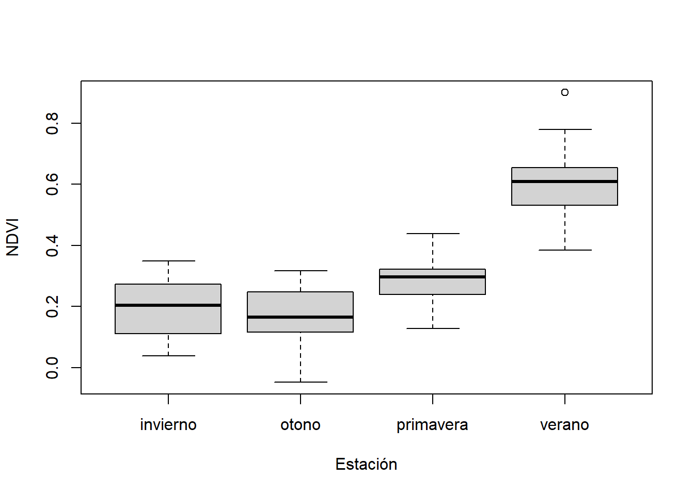
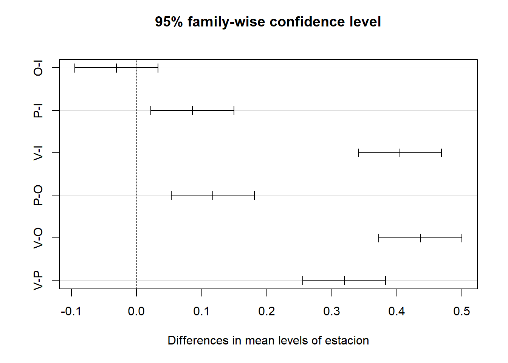
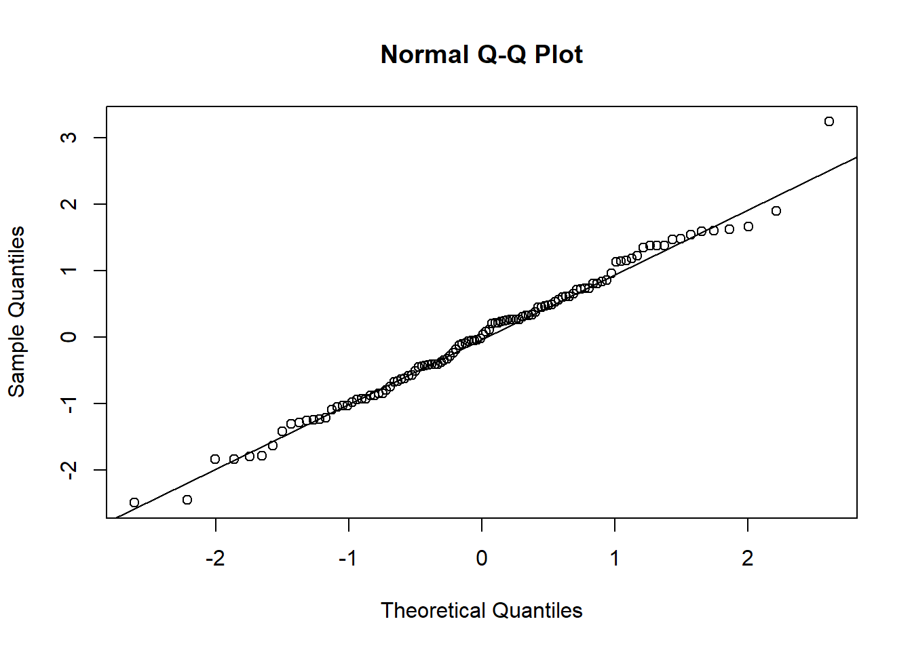
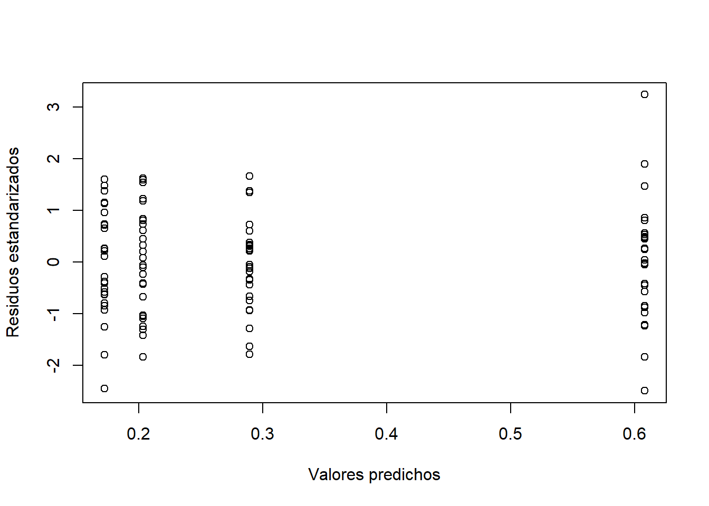
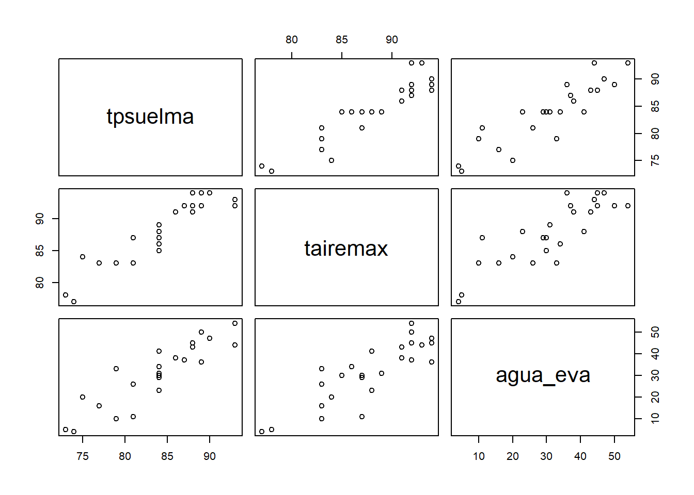
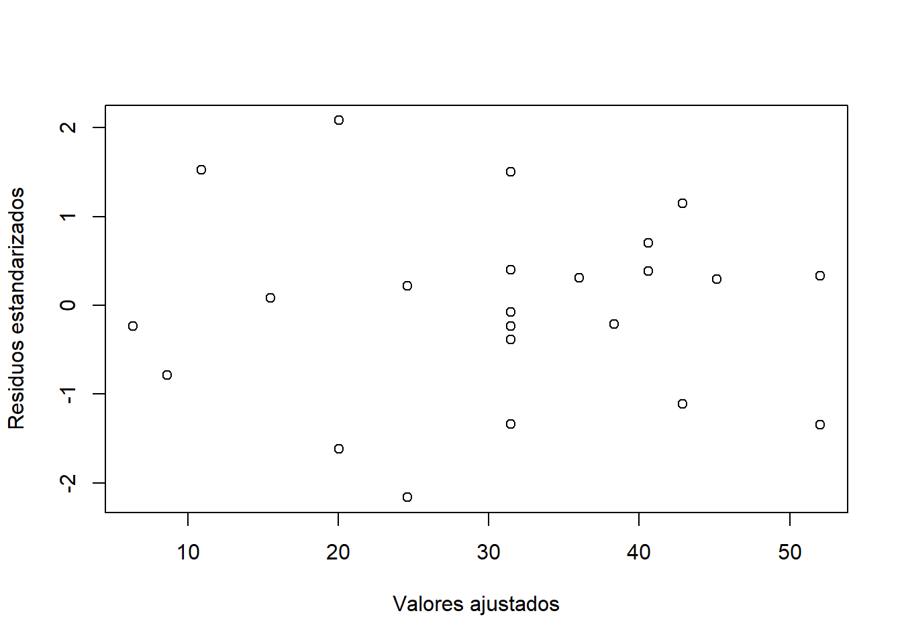

The following object is masked from 'package:lawstat':
levene.test
The following object is masked from 'package:dplyr':
recode
1 NDVI y efecto de la época del año
1.0.1 Contexto
Se dispone de una base de datos de mediciones del Índice de Vegetación de Diferencia Normalizada (NDVI) registradas en las cuatro estaciones del año 2020 en sitios de la región Pampeana con cobertura agrícola (ndvi_4_estaciones.txt). Cada observación corresponde a un sitio diferente y puede considerarse independiente. El objetivo es evaluar si el NDVI varía significativamente según la época del año.
1.0.2 Exploración inicial
Cargue la base de datos e indique: ¿Cuántas observaciones tiene en total? ¿Cuántas observaciones hay por época? Presente el output de R que respalde su respuesta.
## Carga de los datos en una tabla data_ndvi <-read.table("datos/ndvi_4_estaciones.txt")## Mostrar head de la tablahead(data_ndvi)
Construya una tabla de estadística descriptiva que incluya, para cada época: n, media, desvío estándar, coeficiente de variación, mínimo y máximo. Presente la tabla en el informe.
## Tabla de estadística descriptivadata_ndvi %>%group_by(estacion) %>%summarise(n =n(),media =mean(ndvi),de =sd(ndvi),cv =sd(ndvi) /mean(ndvi) *100, min =min(ndvi),max =max(ndvi) )
# A tibble: 4 × 7
estacion n media de cv min max
<chr> <int> <dbl> <dbl> <dbl> <dbl> <dbl>
1 invierno 28 0.203 0.0905 44.5 0.0384 0.349
2 otono 28 0.172 0.0918 53.3 -0.0473 0.317
3 primavera 28 0.289 0.0786 27.2 0.129 0.439
4 verano 28 0.608 0.103 17.0 0.385 0.900
Construya un gráfico de caja (boxplot) que permita comparar visualmente la distribución del NDVI entre épocas.
Incluya el gráfico en el informe y describa en 2–3 oraciones lo que observa: tendencias, variabilidad, presencia de valores atípicos.
## Graficar boxplot con librería por defaultboxplot(ndvi ~ estacion, data = data_ndvi,xlab ="Estación", ylab ="NDVI")

Respuesta: El gráfico de boxplot muestra que, a medida que se pasa del invierno al verano, los valores de NDVI tienden a aumentar. Se observa además que la variabilidad entre las distintas estaciones es similar, lo cual se corrobora en la tabla del punto 3, donde el desvío estándar varía entre 0.07 y 0.10. Finalmente, se identifica una observación atípica (outlier) correspondiente a la estación de verano.
Análisis de comparaciónd de medias. Indique con precisión: el estadístico de prueba, los grados de libertad y el p-valor. ¿Puede concluir que existe alguna diferencia de NDVI entre épocas (α = 0.05)?
Se realizará un análisis de varianza (ANOVA) para comparar las medias de NDVI entre las distintas estaciones. Si bien el boxplot (punto 3) sugiere que los valores de NDVI aumentan desde el invierno hacia el verano, es necesario evaluar si estas diferencias son estadísticamente significativas mediante la comparación formal de las medias.
## Definir y ajustar el modelo para el test de ANOVAfit <-aov(ndvi ~ estacion, data = data_ndvi)## Mostrar un resumen del modelo ajustadosummary(fit)
Df Sum Sq Mean Sq F value Pr(>F)
estacion 3 3.344 1.1147 133.2 <2e-16 ***
Residuals 108 0.904 0.0084
---
Signif. codes: 0 '***' 0.001 '**' 0.01 '*' 0.05 '.' 0.1 ' ' 1
Respuesta:
Estadística de prueba: En el test ANOVA, se corresponde al estadístico F que se computa como la relación entre el cuadrado medio del error entre tratamientos (CMTrat) y el cuadrado medio del error aleatorio (CMError). Para la prueba realizada entre las estaciones, F = 133.2.
Grados de libertad: Los grados de libertad del tratamiento son 3 (k-1), mientras que los del error aleatorio 108 (N-k).
p-valor: 2e-16
A partir del p-valor obtenido, se puede concluir que para un nivel de significancia de 0.05 se puede rechazar la H0 (p-valor < 0.05). Para el caso en estudio, esto se traduce en que existe una diferencia significativa entre alguna de las medias \(\mu_i\) y \(\mu_{i'}\) tal que \(i\)\(\neq\)\(i'\) para las muestras de NDVI de las diferentes estaciones del año.
# Cambio de los labels comparación de estacionesrownames(tk$estacion) <-c("O-I","P-I","V-I","P-O","V-O","V-P")## Plot de los resultados del test de Tukeyplot(tk)

Respuesta:
Se realizó una comparación múltiple de las medias del NDVI para las diferentes estaciones a través del test de Tukey. Dicho test propone como hipótesis H0: \(\mu_i\)\(=\)\(\mu_{i'}\) y como Ha: \(\mu_i\)\(\neq\)\(\mu_{i'}\) tal que \(i\)\(\neq\)\(i'\).
El resultado del test muestra que se rechaza la hipótesis H0 a un nivel 0.05 para la comparación entre las medias de otoño e invierno, con un p-valor igual a 0.5806 (es decir p-valor > 0.05). Para el resto de las comparaciones, no se rechaza H0 a nivel 0.05.
La comparación de medias a través del test de Tukey junto a su gráfico asociado, permiten además concluir la primera impresión obtenida sobre los datos. A medida que se pasa del otoño al verano, la media del NDVI aumenta. Esto se puede expresa de la siguiente forma \(\mu_{Inv}\)\(=\)\(\mu_{Oto}\)\(<\)\(\mu_{Pri}\)\(<\)\(\mu_{Ver}\)
Enumere y verifique si se cumplen los supuestos del modelo.
Respuesta:
Los supuestos del modelo de ANOVA son:
a) Independencia: Se garantiza a través de un proceso de aleatorización del proceso de muestreo.
b) Normalidad: El término de error aleatorio para las n observaciones de las k poblaciones tienen distribución normal.
c) Homogeneindad de varianzas: El término de error aleatorio para las n observaciones de las k poblaciones son iguales.
Evaluación de la normalidad
La normalidad del término de error aleatorio se evaluó a través de un gráfico de Q-Q plot de los residuos y el test de Shapiro-Wilk.
## Ploteo QQplot para evaluar normalidad de los residuosqqnorm(rstandard(fit))qqline(rstandard(fit))

## Test de Shapiro-Wilk para evaluar normalidad de los residuosshapiro.test(rstandard(fit))
Shapiro-Wilk normality test
data: rstandard(fit)
W = 0.99132, p-value = 0.7025
El gráfico de Q-Q plot muestra que los puntos, correspondientes a los residuos, se ordenan alrededor de la recta identidad (quantil muestral = quantil teórico). Esto aporta evidencia de que los residuos siguen aproximadamente una distribución normal.
El test de Shapiro-Wilks plantea como H0 que los residuos siguen una distribución normal, mientras que la Ha plantea que no la siguen. El resultado del test muestra que, a un nivel de significancia de 0.05, no se rechaza H0, con un p-valor de 0.7025 (es decir, p-valor > 0.05). De esta manera, no existe evidencia estadísticamente significativa para afirmar que los residuos no siguen una distribución normal.
Homogeneidad de varianzas
La homogeneidad de varianzas del término de error aleatorio se evaluó a través de un gráfico de residuos estandarizados versus valores predichos y el test de Levene.
## Ploteo de gráfico de residuos estandarizados vs valores predichos para evaluar## homogeneidad de varianzasplot(fitted.values(fit), rstandard(fit),xlab ="Valores predichos", ylab ="Residuos estandarizados")

## Test de Levene para evaluación de homogeneidad de varianzascar::leveneTest(data_ndvi$ndvi, data_ndvi$estacion, center = mean)
Warning in leveneTest.default(data_ndvi$ndvi, data_ndvi$estacion, center =
mean): data_ndvi$estacion coerced to factor.
Levene's Test for Homogeneity of Variance (center = mean)
Df F value Pr(>F)
group 3 0.5698 0.6361
108
El gráfico de residuos estandarizados versus valores predichos muestra que los residuos presentan una dispersión similar alrededor de 0, sin detectarse patrones observables. Esto aporta evidencia de homogeneidad de varianzas.
El test de Levene plantea como H0 la igualdad de varianzas entre grupos, mientras que la Ha plantea que al menos una varianza difiere. El resultado del test muestra que, a un nivel de significancia de 0.05, no se rechaza H0, con un p-valor de 0.6361 (es decir, p-valor > 0.05). De esta manera, no existe evidencia estadísticamente significativa para afirmar que las varianzas difieren entre grupos.
El p-valor del análisis principal resultó menor a 0.001. ¿Significa esto que todas las épocas son diferentes entre sí? Responda usando los resultados concretos de la comparación múltiple.
Respuesta:
El resultado obtenido (p-valor < 0.001) permite rechazar la H0 del test ANOVA, la cual plantea la igualdad de medias entre los k grupos, a un nivel de significancia de 0.001. Sin embargo, esto no permite afirmar que todas las medias de NDVI para las diferentes estaciones difieran entre sí. Para identificar específicamente qué medias presentan diferencias significativas, se realizó un test de comparación múltiple de medias. En este caso, se empleó el test de Tukey (ítem 5). Los resultados obtenidos muestran que, para un nivel de significancia de 0.05, las únicas medias que no difieren significativamente entre sí son las correspondientes a invierno (\(\mu_{Inv}\) ) y otoño (\(\mu_{Oto}\)), mientras que el resto de las comparaciones presentan diferencias significativas.
Su colega decidió no verificar los supuestos del modelo. En su caso particular, ¿qué consecuencias podría tener esa decisión? Use los resultados que obtuvo anteriormente para fundamentar.
2 Regresión lineal simple y múltiple: evaporación de suelo
2.0.1 Contexto
La base de datos (evaporacion.txt) contiene registros diarios de evaporación de suelo (agua_eva, en mm), temperatura máxima del suelo (tpsuelma, en °F) y temperatura máxima del aire (tairemax, en °F). El objetivo es construir un modelo estadístico para predecir la evaporación diaria.
2.0.2 Exploración y correlación
## Carga de los datosdata_evap <-read.table("datos/evaporacion.txt", head =TRUE)## Mostrar head de la tablahead(data_evap)
Cargue los datos y construya una matriz de dispersión (scatterplot matrix) que muestre las relaciones entre las tres variables. Incluya el gráfico. Describa en pocas líneas: ¿qué relaciones observa? ¿Parecen lineales?
## Visualización de la scatterplot matrixpairs(data_evap)

Respuesta:
Los scatter plot muestran, a primera vista, que para todas las combinaciones entre variables hay una relación lineal. La misma debe posteriormente probarse a través de la evaluación de parámetros estadísticos.
Calcule la matriz de correlaciones entre las tres variables. Pegue el output. Preste especial atención a la correlación entre tpsuelma y tairemax: ¿cuánto vale y qué implicancia puede tener esto al construir un modelo de regresión múltiple?
## Visualización de la matriz de correlacióncor(data_evap)
El coeficiente de correlación entre tpsuelma y tairemax (r = 0.9268) muestra un alto grado de relación lineal entre las variables. Construir un modelo que incluya ambas variables, puede dar como un resultado uno donde no sea distinguible el efecto individual de cada una sobre la variable dependiente.
Ajuste un modelo de regresión lineal múltiple con agua_eva como variable respuesta, y tpsuelma y tairemax como regresoras. Pegue el summary() completo.
## Defino un primer modelo## Variables predictoras: T. máxima del suelo (tpsuelma) y T. máxima del aire (tairemax)model_1 <-lm(agua_eva ~ tpsuelma + tairemax, data = data_evap)## Summary del modelosummary(model_1)
Call:
lm(formula = agua_eva ~ tpsuelma + tairemax, data = data_evap)
Residuals:
Min 1Q Median 3Q Max
-14.4001 -2.1488 0.0814 3.3825 13.2875
Coefficients:
Estimate Std. Error t value Pr(>|t|)
(Intercept) -169.4393 24.7330 -6.851 7e-07 ***
tpsuelma 1.8969 0.6466 2.934 0.00768 **
tairemax 0.4734 0.7325 0.646 0.52479
---
Signif. codes: 0 '***' 0.001 '**' 0.01 '*' 0.05 '.' 0.1 ' ' 1
Residual standard error: 6.549 on 22 degrees of freedom
Multiple R-squared: 0.8018, Adjusted R-squared: 0.7837
F-statistic: 44.49 on 2 and 22 DF, p-value: 1.859e-08
Indique el valor del \(R^{2}\) ajustado obtenido. ¿Qué significa concretamente en el contexto de este problema? Escriba una oración que un profesional sin formación en estadística avanzada pueda entender.
Respuesta:
El valor de \(R^{2}\) ajustado obtenido para el modelo ajustado fue de 0.7837. Este parámetro permite medir la proporción de variabilidad de la variable respuesta que es explicada por el modelo ajustado respecto de la variabilidad total observada. En el contexto del problema en estudio, esto puede interpretarse como que aproximadamente el 78% de las variaciones observadas en la evaporación del suelo pueden ser explicadas a partir del cambio en la temperatura del suelo y la temperatura del aire mediante el modelo ajustado.
Utilizando los coeficientes estimados del modelo múltiple (ítem 3): ¿Qué se espera que ocurra con la evaporación si la temperatura máxima del suelo aumenta 1°F, manteniendo constante la temperatura del aire? Use el valor exacto del coeficiente de su output para responder.
## Mostrar los coeficientes del modelo ajustado coefficients(model_1)
El coeficiente del modelo ajustado para la temperatura máxima del suelo obtenido fue \(\beta_{tpsuelma}\) = 1.8969 mm/°F. Si se mantiene la temperatura máxima del aire constante, un cambio en 1 °F de la tempratura del suelo, se va a traducir en el aumento de aproximadamente 1.90 mm en la evapotranspiración.
Calcule el Factor de Inflación de la Varianza (VIF) para las variables del modelo múltiple. Pegue el output. ¿Hay indicios de multicolinealidad? ¿Qué valor o criterio utilizó para tomar esa decisión?
## Cálculo del factor VIFcar::vif(model_1)
tpsuelma tairemax
7.095507 7.095507
Respuesta:
El valor VIF para ambas variables resultó ser > 5. Esto muestra tanto la temperatura del suelo como la del aire medidas presentan multicolinealidad.
Ajuste dos modelos de regresión lineal simple: uno con tpsuelma como regresora y otro con tairemax. Para cada modelo indique el \(R^{2}\) y compárelo con el \(R^{2}\) ajustado del modelo múltiple del ítem 3. Organice los resultados en una tabla comparativa.
## Defino modelo 2.## Variable predictora: T. máxima del suelo (tpsuelma)model_2 <-lm(agua_eva ~ tpsuelma, data = data_evap)## Defino modelo 3## Variable predictora: T. máxima del aire (tairemax)model_3 <-lm(agua_eva ~ tairemax, data = data_evap)
## Summary modelo 2summary(model_2)
Call:
lm(formula = agua_eva ~ tpsuelma, data = data_evap)
Residuals:
Min 1Q Median 3Q Max
-13.6100 -2.4627 0.5269 2.5373 12.9585
Coefficients:
Estimate Std. Error t value Pr(>|t|)
(Intercept) -160.4133 20.1522 -7.960 4.67e-08 ***
tpsuelma 2.2842 0.2396 9.532 1.87e-09 ***
---
Signif. codes: 0 '***' 0.001 '**' 0.01 '*' 0.05 '.' 0.1 ' ' 1
Residual standard error: 6.465 on 23 degrees of freedom
Multiple R-squared: 0.798, Adjusted R-squared: 0.7892
F-statistic: 90.86 on 1 and 23 DF, p-value: 1.874e-09
## Summary modelo 3summary(model_3)
Call:
lm(formula = agua_eva ~ tairemax, data = data_evap)
Residuals:
Min 1Q Median 3Q Max
-18.5049 -3.4357 -0.5049 5.4258 13.3565
Coefficients:
Estimate Std. Error t value Pr(>|t|)
(Intercept) -184.9817 27.8693 -6.637 9.01e-07 ***
tairemax 2.4654 0.3172 7.771 7.03e-08 ***
---
Signif. codes: 0 '***' 0.001 '**' 0.01 '*' 0.05 '.' 0.1 ' ' 1
Residual standard error: 7.554 on 23 degrees of freedom
Multiple R-squared: 0.7242, Adjusted R-squared: 0.7122
F-statistic: 60.39 on 1 and 23 DF, p-value: 7.03e-08
Respuesta:
En la tabla de continuación de resumen los resultados del \(R^{2}\) ajustado para los tres modelos
Considerando los resultados de los ítems 2, 3, 6 y 7 (correlación entre predictores, coeficientes estimados, multicolinealidad y bondad de ajuste): ¿cuál de los tres modelos recomendaría para predecir la evaporación? Justifique explícitamente su elección.
Respuesta:
El análisis de correlación entre predictores arroja El resultado de los \(R^{2}\) ajustados para los tres modelos arroja que el que utiliza la variable de temperatura máxima del suelo (tpsuelma), es la que tiene el coeficiente más alto. De esta forma, es el que mejor explica la variación del cambio de la evaporación del suelo.
## plot(data_evap$tpsuelma, data_evap$agua_eva, xlab ="T. Máx. Suelo (°F)", ylab ="Evaporación agua (mm)")abline(coefficients(model_2), col ="red", lwd =2)legend("topleft", legend ="Modelo 2", col ="red", lwd =2,bty ="n")
Se registró un día con tpsuelma = 88°F y tairemax = 90°F. Usando los coeficientes del modelo que seleccionó en el ítem 8, prediga la evaporación esperada ese día. Muestre el cálculo explícito con los valores numéricos de su ecuación ajustada (no alcanza con pegar la salida de predict(); escriba la operación aritmética)
Una evaluación escrita: ¿se observa algún patrón sistemático en los residuos? ¿Considera que el supuesto de homocedasticidad se cumple? Fundamente su respuesta en funcion de lo que muestra el gráfico.
## Ploteo gráfico de residuos estandarizados vs. valores ajustadosplot(fitted.values(model_2), rstandard(model_2),xlab ="Valores ajustados", ylab ="Residuos estandarizados")

Respuesta:
A partir del gráfico de residuos estandarizados vs. valores ajustados, no se observa que los residuos sigan un patrón definido. Es decir, a lo largo del eje de valores predichos, los residuos se distribuyen de manera aproximadamente homogénea alrededor de 0, principalmente entre -2 y 2. En función de esto, es posible decir que se cumple el supuesto de homocedasticidad.
Un estudiante observa que el modelo múltiple (ítem 3) tiene un \(R^{2}\) mayor que cualquiera de los dos modelos simples, y concluye que “siempre es mejor incluir más variables porque el \(R^{2}\) solo puede aumentar o mantenerse igual”. ¿Está de acuerdo con esta afirmación? Desarrolle su respuesta considerando al menos dos argumentos estadísticos concretos.
No es correcto afirmar que, al incluir más variables predictoras en el ajuste de un modelo, el \(R^{2}\) ajustado necesariamente aumenta o se mantiene constante. Esto es lo que se observó para el caso del modelo ajustado para la evaporación del agua en función de las temperaturas del suelo y del aire. En este caso, al incluir ambas variables predictoras, la bondad de ajuste del modelo resulta menor que al incluir solo una de ellas. Esto se debe a que agregar información redundante, producto de la alta multicolinealidad entre las variables predictoras, incrementa la complejidad del modelo sin mejorar su capacidad explicativa.